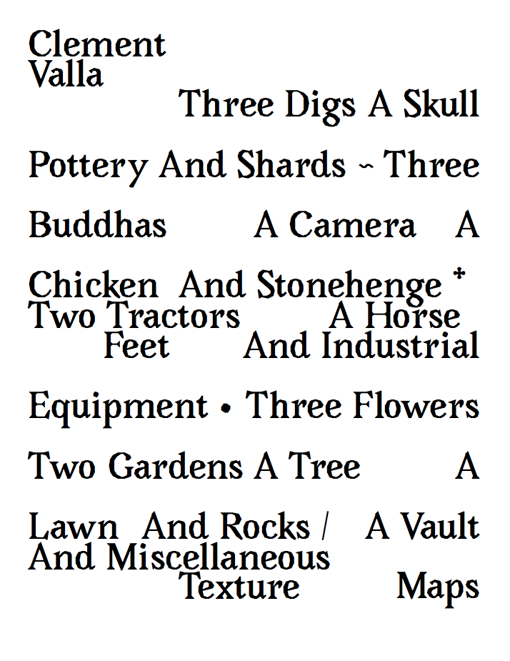
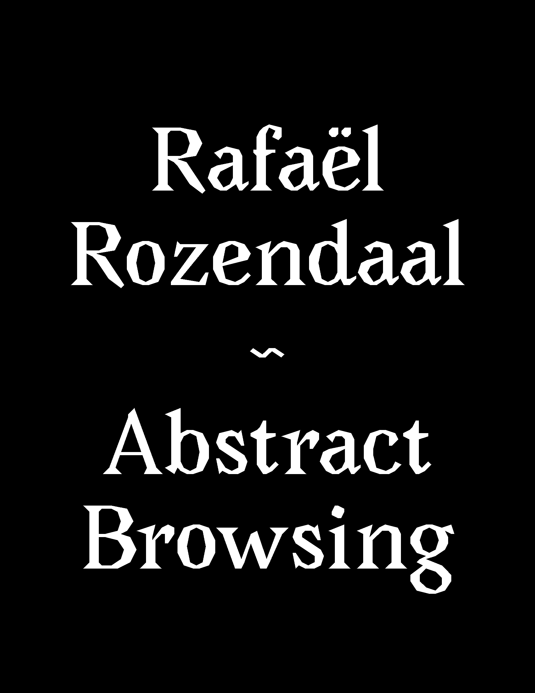
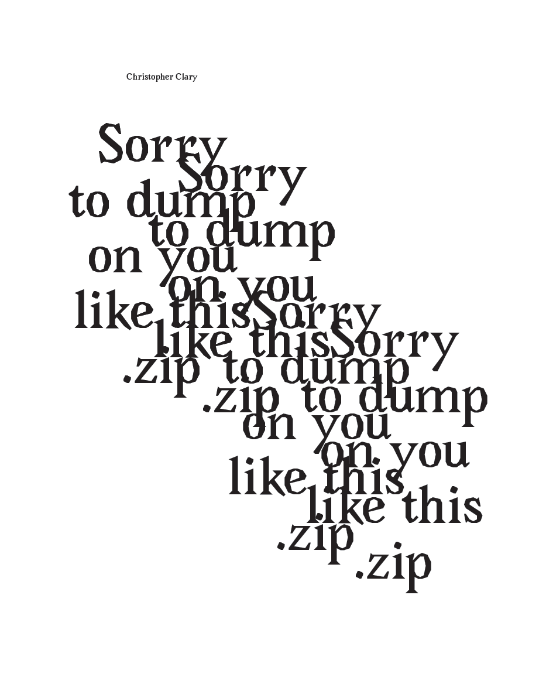
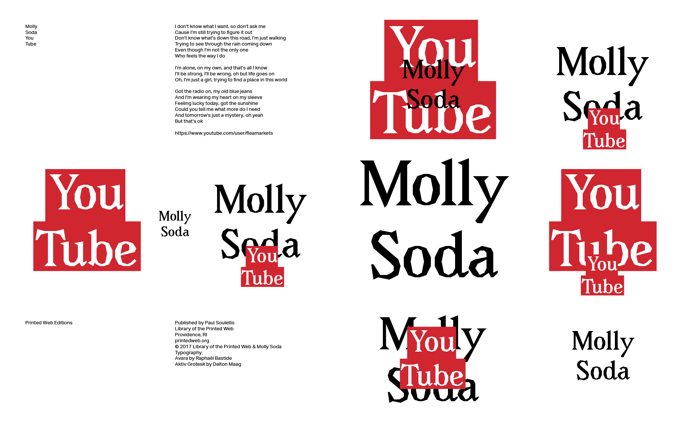
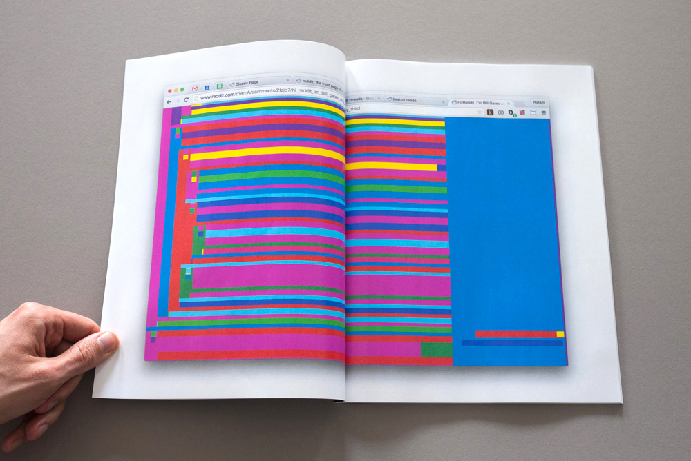
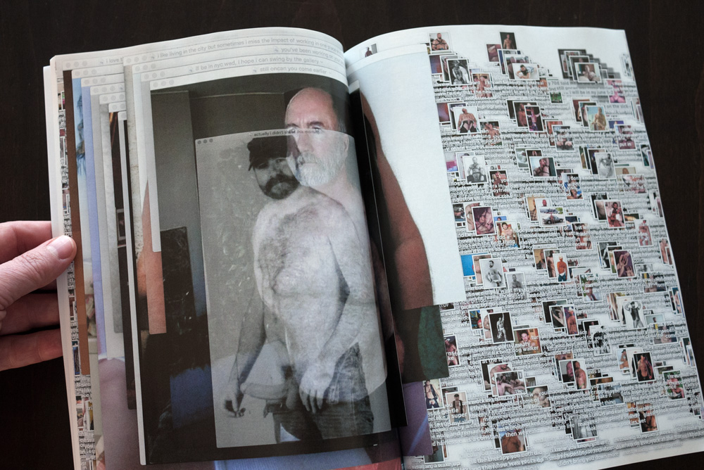
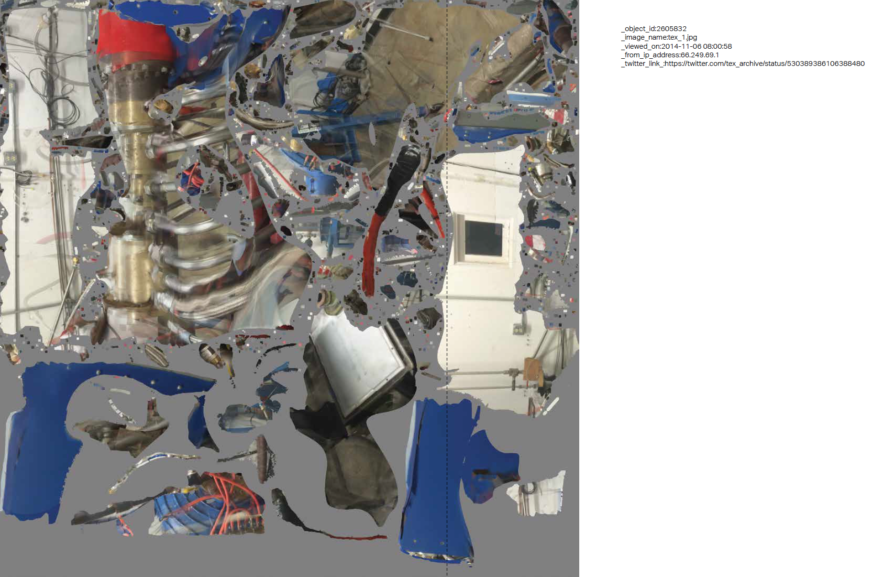

Printed Web Editions




Printed Web Editions is a series of print-on-demand publications edited by Paul Soulellis. Each zine features an individual artist’s work, designed specifically for the zine form. Printed Web Editions are typically 8.5 in. x 11 in., 72 pages + cover, with a project statement by the artist. Artists in the series include Allison Parrish (forthcoming fall 2018), Molly Soda, Rafaël Rozendaal, Christopher Clary, and Clement Valla.

Molly Soda, “Molly Soda You Tube” (2017)
8.5 in. x 11 in. print-on-demand zine
64 pages + cover
Download PDF
Purchase print edition

Rafaël Rozendaal, “Abstract Browsing” (2016)
8.5 in. x 11 in. print-on-demand zine
72 pages + cover
A copy of “Abstract Browsing” is in the artists’ books collection at MoMA Library in New York, included as part of MoMA’s acquisition of Library of the Printed Web in 2017.
Download PDF
Purchase print edition

Christopher Clary, “Sorry to dump on you like this.zip” (2016)
8.5 in. x 11 in. print-on-demand zine
72 pages + cover
A copy of “Sorry to dump on you like this.zip” is in the artists’ books collection at MoMA Library in New York, included as part of MoMA’s acquisition of Library of the Printed Web in 2017.
Download PDF
Purchase print edition

Clement Valla, “Three Digs A Skull” (2015)
8.5 in. x 11 in. print-on-demand zine
72 pages + cover
A copy of “Three Digs A Skull” is in the artists’ books collection at MoMA Library in New York, included as part of MoMA’s acquisition of Library of the Printed Web in 2017.
Download PDF
Purchase print edition